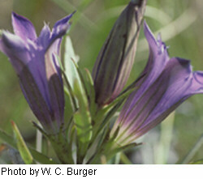

Features in Production, Live Description Pages
We are currently writing species description pages for about 3000 plants and 1000 fungi. These pages provide information about individual species or subspecies or varieties. Below are links to some of the completed plant descriptions. Website programming is underway to link these description pages from the search results and the current specimen pages.
Please take a look and provide us with some feedback. We want these pages to be useful and we need your input to make that happen. Enjoy!
| Example | Date |
|---|---|
| Plants of Concern | 2006 May 05 |
| Scientific Name | Family | Author Institution |
|---|---|---|
| Agaricus bitorquis | Agaricaceae | The Field Museum |
| Agaricus campestris | Agaricaceae | The Field Museum |
| Scleroderma areolatum | Sclerodermataceae | The Field Museum |
| Scientific Name | Family | Author Institution |
|---|---|---|
| Abelmoshus esculentus | Malvaceae | The Field Museum |
| Abutilon theoprasti | Malvaceae | The Field Museum |
| Allaria petiolata | Brassicaceae | The Morton Arboretum |
| Alyssum alyssoides | Brassicaceae | The Morton Arboretum |
| Arabidopsis thalinana | Brassicaceae | The Morton Arboretum |
| Armoracia rusticana | Brassicaceae | The Morton Arboretum |
| Barbarea verna | Brassicaceae | The Morton Arboretum |
| Barbarea vulgaris | Brassicaceae | The Morton Arboretum |
| Bartonia virginica | Gentianaceae | The Field Museum |
| Brasenia schreberi | Cabombaceae | The Morton Arboretum |
| Brassica juncea | Brassicaceae | The Morton Arboretum |
| Brassica napus | Brassicaceae | The Morton Arboretum |
| Brassica nigra | Brassicaceae | The Morton Arboretum |
| Brassica rapa | Brassicaceae | The Morton Arboretum |
| Campanula americana | Campanulaceae | The Field Museum |
| Campanula aparinoides | Campanulaceae | The Field Museum |
| Campanula aparinoides ssp. uliginosa | Campanulaceae | The Field Museum |
| Capsella bursa-pastoris | Brassicaceae | The Morton Arboretum |
| Cardamine bulbosa | Brassicaceae | The Morton Arboretum |
| Cardamine douglassi | Brassicaceae | The Morton Arboretum |
| Cardamine hirsuta | Brassicaceae | The Morton Arboretum |
| Celtis occidentalis | Rubiaceae | The Morton Arboretum |
| Celtis tenuifolia | Ulmaceae | The Morton Arboretum |
| Centaurium erythraea | Gentianaceae | The Field Museum |
| Centaurium pulchellum | Gentianaceae | The Field Museum |
| Cirsium hilli | Asteraceae | The Field Museum |
| Cirsium pitcheri | Asteraceae | The Field Museum |
| Comandra umbellata | Santalaceae | The Morton Arboretum |
| Comandra umbellata ssp. umbellata | Santalaceae | The Morton Arboretum |
| Eichhornia crassipes | Pontederiaceae | The Field Museum |
| Eriocaulon aquaticum | Eriocaulaceae | The Morton Arboretum |
| Forsythia x intermedia | Oleaceae | The Morton Arboretum |
| Frasera caroliniensis | Gentianaceae | The Field Museum |
| Fraxinus americana | Oleaceae | The Morton Arboretum |
| Fraxinus nigra | Oleaceae | The Morton Arboretum |
| Fraxinus pennsylvanica | Oleaceae | The Morton Arboretum |
| Fraxinus profunda | Oleaceae | The Morton Arboretum |
| Fraxinus quadrangulata | Oleaceae | The Morton Arboretum |
| Gentiana alba | Gentianaceae | The Field Museum |
| Gentiana andrewsii | Gentianaceae | The Field Museum |
| Gentiana andrewsii var. andrewsii | Gentianaceae | The Field Museum |
| Gentiana andrewsii var. dakotica | Gentianaceae | The Field Museum |
| Gentiana puberulenta | Gentianaceae | The Field Museum |
| Gentiana saponaria | Gentianaceae | The Field Museum |
| Gentiana x billingtonii | Gentianaceae | The Field Museum |
| Gentiana x pallidocyanea | Gentianaceae | The Field Museum |
| Gentianella quinquefolia ssp. occidentalis | Gentianaceae | The Field Museum |
| Gentianopsis crinita | Gentianaceae | The Field Museum |
| Gentianopsis procera | Gentianaceae | The Field Museum |
| Heteranthera dubia | Pontederiaceae | The Field Museum |
| Justicia americana | Acanthaceae | The Field Museum |
| Larix laricina | Pinaceae | The Morton Arboretum |
| Ligustrum obtusifolium | Oleaceae | The Morton Arboretum |
| Ligustrum vulgare | Oleaceae | The Morton Arboretum |
| Lythrum salicaria | Lythraceae | The Field Museum |
| Mirabilis hirsuta | Nyctaginaceae | The Field Museum |
| Mirabilis jalapa | Nyctaginaceae | The Field Museum |
| Mirabilis linearis | Nyctaginaceae | The Field Museum |
| Mirabilis nyctaginea | Nyctaginaceae | The Field Museum |
| Pinus banksiana | Pinaceae | The Morton Arboretum |
| Pinus nigra | Pinaceae | The Morton Arboretum |
| Pinus resinosa | Pinaceae | The Morton Arboretum |
| Pinus ridigna | Pinaceae | The Morton Arboretum |
| Pinus strobus | Pinaceae | The Morton Arboretum |
| Pinus sylvestris | Pinaceae | The Morton Arboretum |
| Pinus virginiana | Pinaceae | The Morton Arboretum |
| Populus alba | Salicaceae | The Morton Arboretum |
| Populus balsamifera | Salicaceae | The Morton Arboretum |
| Populus deltoides | Salicaceae | The Morton Arboretum |
| Populus x canescens | Salicaceae | The Morton Arboretum |
| Pontederia cordata | Pontederiaceae | The Field Museum |
| Ruellia humilis | Acanthaceae | The Field Museum |
| Ruellia strepens | Acanthaceae | The Field Museum |
| Syringa velutina | Oleaceae | The Morton Arboretum |

Information provided on this page applies to the Chicago Region and may not be relevant or complete for other regions.